The MeshEdit project is a project about building meshes for 2D/3D objects. We start by implementing Bezier curve, and move to triangle meshes. For the bezier curve part, I implemented constructing Bezier curve as well as Bezier surface. For the triangle mesh part, I implement basic operations for the halfedge data structure. This include edge flipping and edge splitting. Finally, I used these two operations to upsample meshes. I think the halfedge data structure has a brilliant design which saves space and enable the program to build meshes easily. Also, I find the upsampling part quite interesting. Although I have no idea how those magic numbers (3/8 and 1/8) come from, but they work pretty well upsampling the meshes and smoothens the edges and vertices.
de Casteljau's algorithm is an algorithm for finding points for Bezier curves. Starting with a list of n control points, it recursively lerp between two neighboring points using t to produce the next-level control points. When the number of points decreases to 1, the resulting point will be the point on the bezier curve, parametrized by t.
Following the idea of this algorithm, I implemented a helper function lerp(p0, p1, t). In evaluateStep(), I simply scan through the control points and lerp between the neighboring points and push the result to a new list.
|
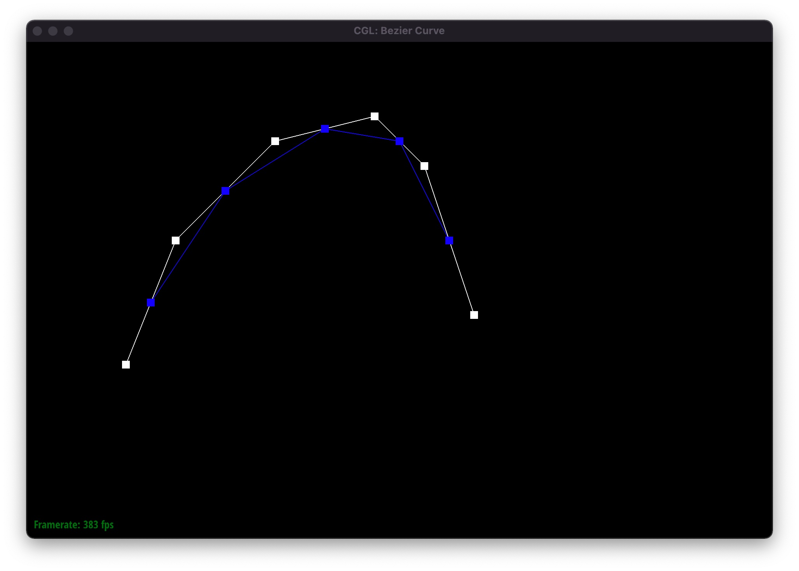
|
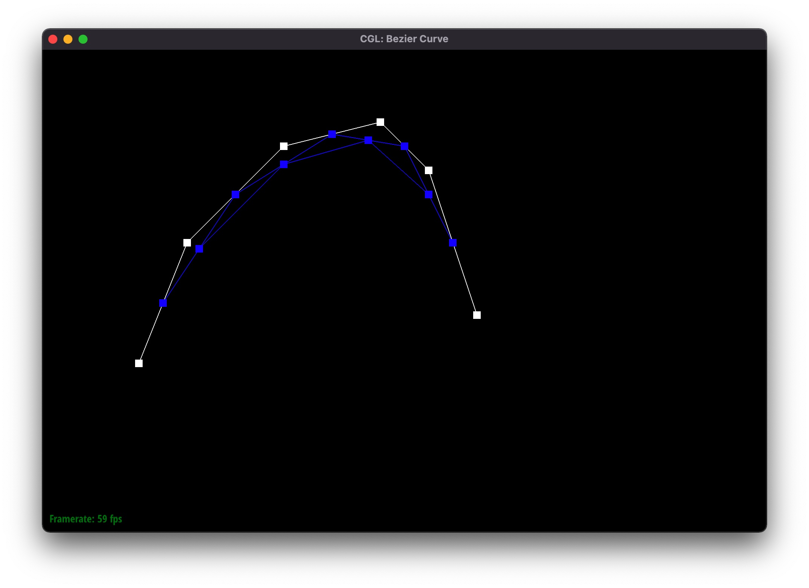
|
|
|
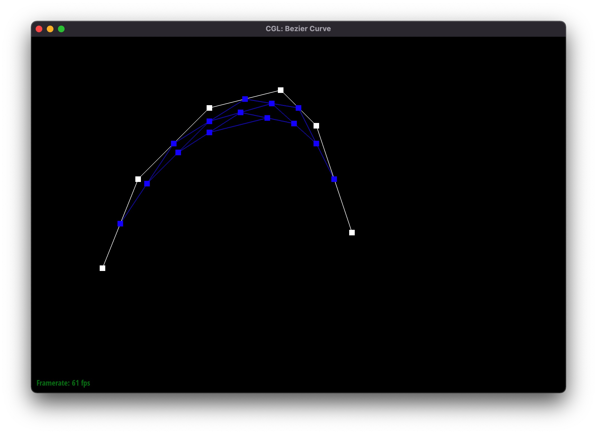
|
|
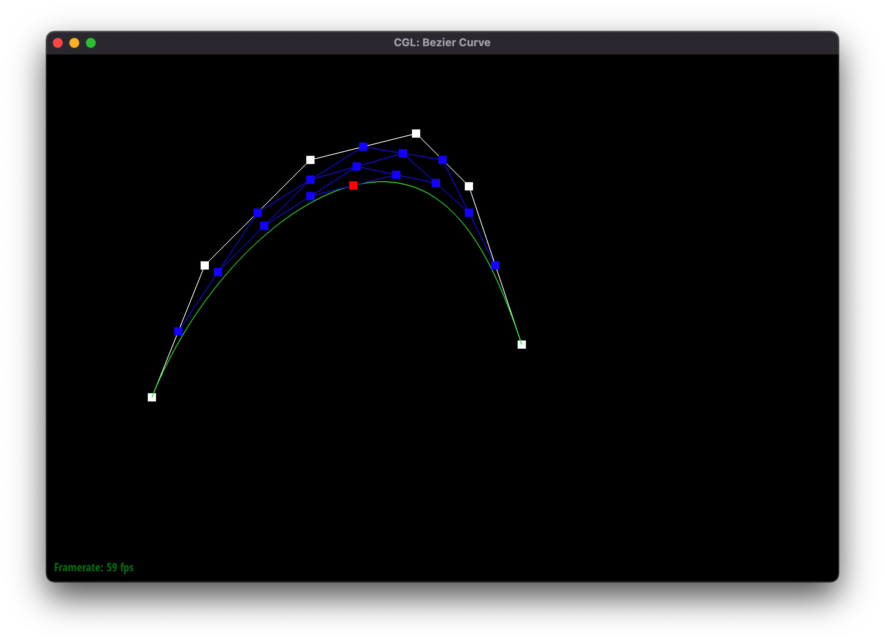
|
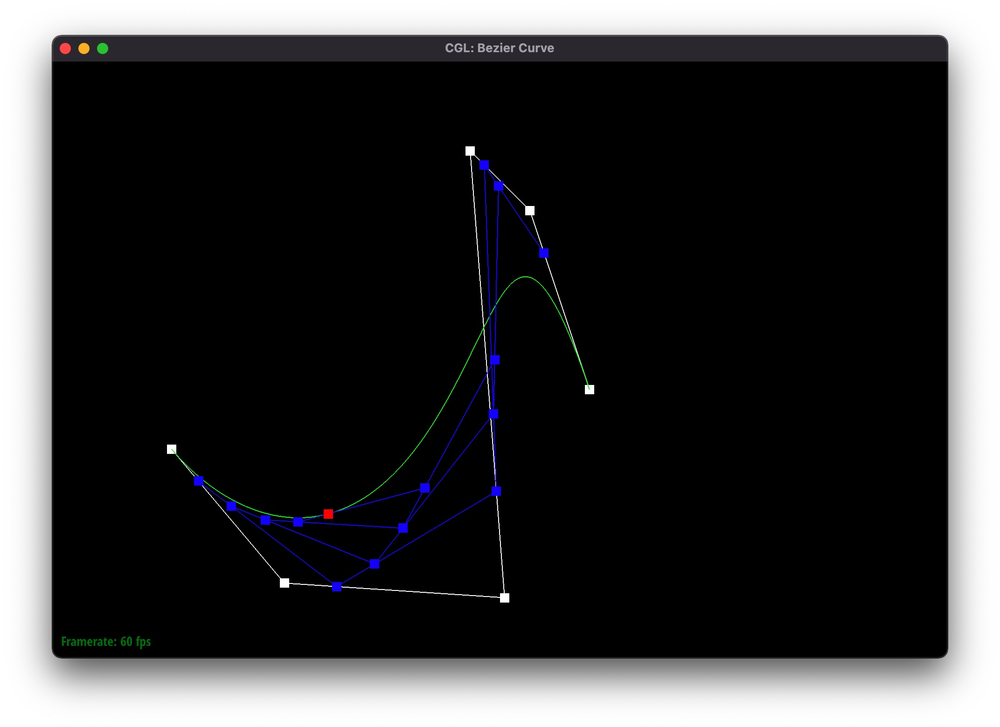
|
Here we have two parameters u, v. Extending to Bezier surfaces, the algorithm first evaluate Bezier curves for each row of control points parametrized by u, and then evaluate Bezier curves for columns parametrized by v using the control points evaluated by Bezier curve rows.
Following the idea of this extension, for parameter u, v, I first evaluate the points for the row control points parametrized by u, and then use these points to evaluate the final result parametrized by v. The evaluate methods is the same as the de Casteljau's algorithm from part 1.
I implemented this part by using the main idea from printNeighborPositions(...) to get the neighboring vertex v = h_twin.vertex(), and get the other vertex for the triangle by w = h->next()->twin()->vertex().
With three vertex of the triangle available (this, v, w), I calculate one edge vector to be ab = this - v, the other as ac = w - v.
The normal vector is the normalized cross product of the two edges, and the area is the norm of the cross product of the two edges.
Finally, I divide the sum of normal vectors of all neighboring triangles by the sum of areas of them.
|
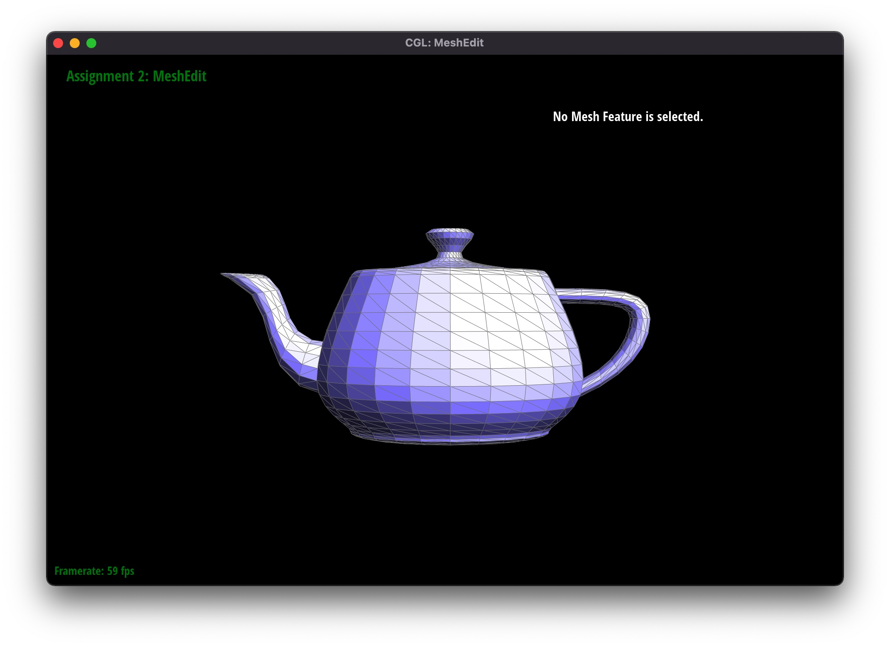
|
|
To implement edge flip, I first draw a trivial example on my ipad, and realize that we don't need to modify halfedges other than the ones that belongs to the two triangles.
I start by creating variables for the 2 faces, the 4 vertices, the 4 surrounding halfedges, and the 2 halfedges that is going to be flipped.
Without loss of generality, I assumed one of the halfedges (e0->halfedge()) that we want to flip is left, and the other one is right.
For pointers to and from faces, I let the left face to become the top face. This requires setting the 2 faces' halfedges, and setting 2 halfedges' faces.
When flipping the edges, I set the 2 flipped edges' vertices, and set 2 vertices' halfedges.
Finally, I modified the 6 halfedges' (4 surrounding halfedges and 2 flipped halfedges) "next" pointers to trace the new triangles.
|
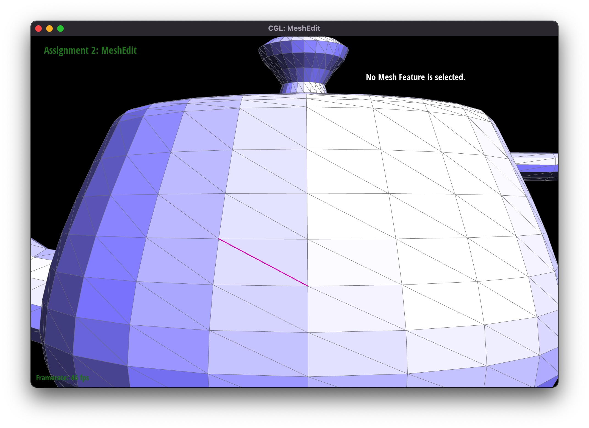
|
|
For debugging, I discovered 2 bugs I wrote. The first one is that for the new triangle, I only modified two halfedges' next pointers so that when I flip an edge, the entire face will disappear. I found this bug by manually going through what I drew on the ipad. The second bug is I forgot to modify some halfedges' face pointers so that after a couple of flips, some face will disappear. I found this bug by checking each halfedges' face pointer value in the information overlay and found that one halfedge has a completely different face address than the other two.
To implement edge split, I also draw a trivial example on my ipad, and listed everything I need to save as variable. This includes 4 faces (2 old 2 new), 3 center edges (3 new), 4 surrounding halfedges (4 old), 8 center halfedges (2 old 6 new), 5 vertices (4 old 1 new).
I then start filling the pointers of the new elements and modifying the old pointers one by one. For example, for halfedges, I start by setting all twin pointers, then next pointers, then vertex pointers, and edge as well as face pointers.
The final thing is to set the new center vertex's position to be the average of the top and bottom vertices.
|
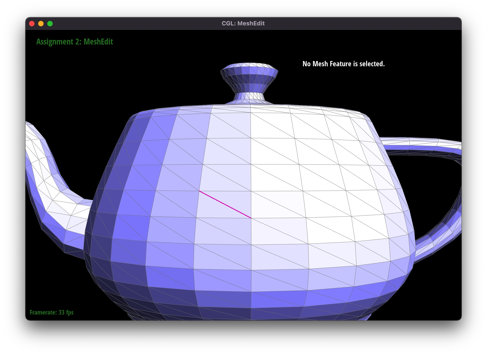
|
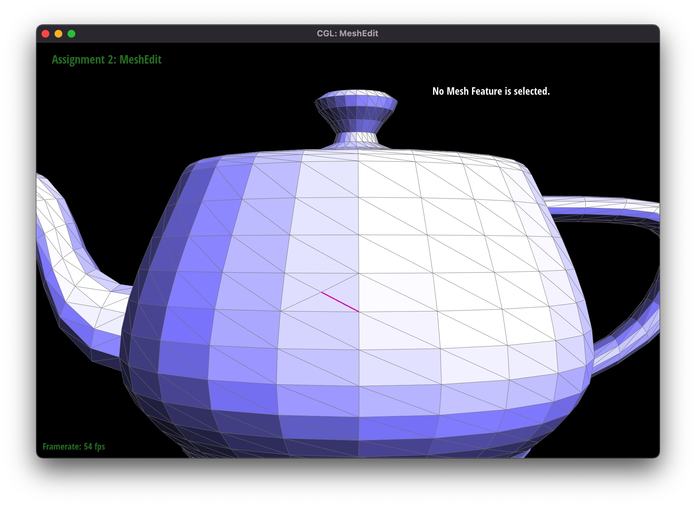
|
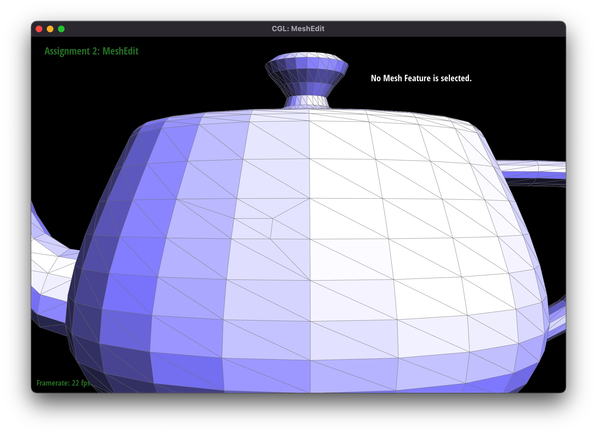
|
The debugging was quite easy after debugging the previous part. I messed up some variable names which makes the halfedge-to-vector mapping weird. After some debugging using clion, I tracked the failing vertices and fix them.
I take care of boundary edge splitting by first checking if the edge is in boundary. If it is, that means we don't need to create the triangles in the boundary side.
Note that in this case, we cannot assume without loss of generality that e0->halfedge() is the left halfedge because the boundary could be in both side. Therefore, I manually set the left halfedge to be the halfedge that is not in the boundary and the right halfedge to be the halfedge that is in the boundary.
The difference between boundary edge split and normal edge split is that I don't need to care about many things on the boundary side. So I just deleted some lines of code from the normal edge split case to implement boundary edge split.
|
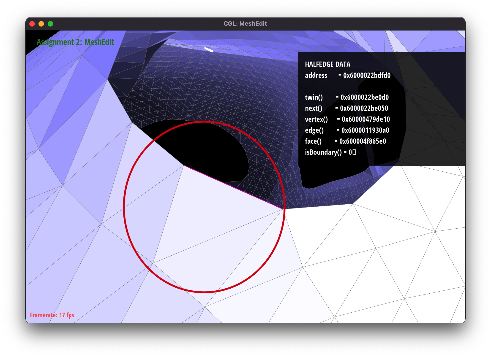
|
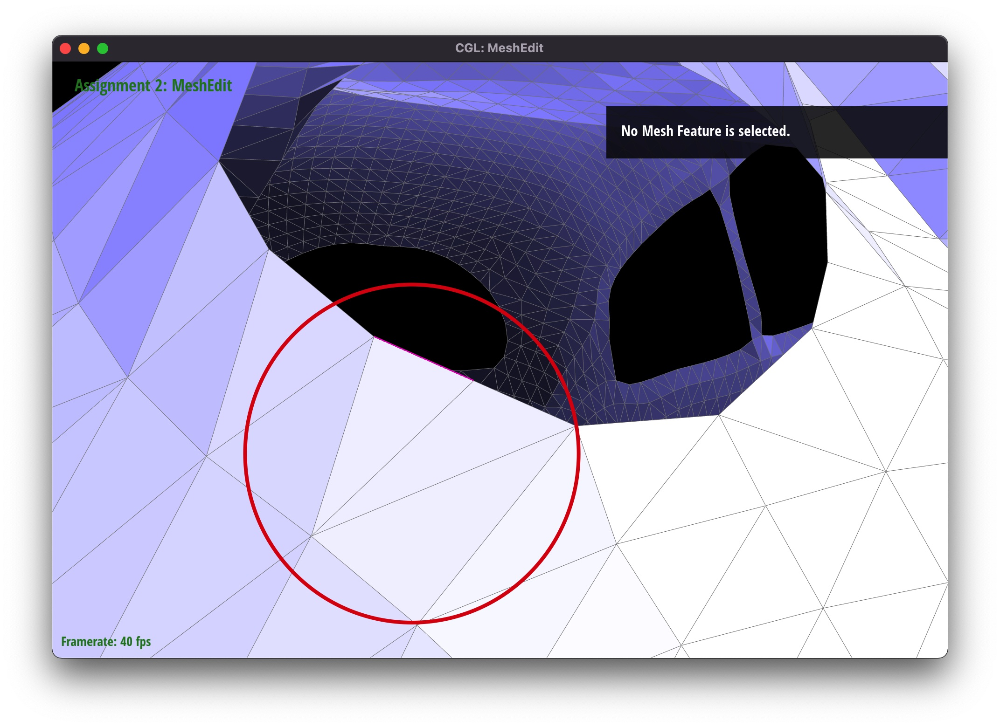
|
To implement loop subdivision, I follow the comments in the code.
First, I iterate through all vertices, computing the new positions, and setting them to be not new.
Then, I iterate through all edges, computing the new positions, and setting them to be not new as well.
Then, I iterate through all edges (that are old) to split them. To prevent getting into infinite loop, I break as soon as I see a new edge.
Then, I iterate through all edges (that are new), flipping them if it connects an old vertex with a new vertex. I distinguish the edge that needs to be flipped with the edge that is splitted by setting the former's halfedge to point to the split vertex and setting the latter's halfedge to point to the old vertex. This way, I simply need to check edge->halfedge()->vertex()->isNew to see if I need to flip it. If true, then don't flip. Otherwise, flip.
No debugging needed. I'm feeling lucky :)
| 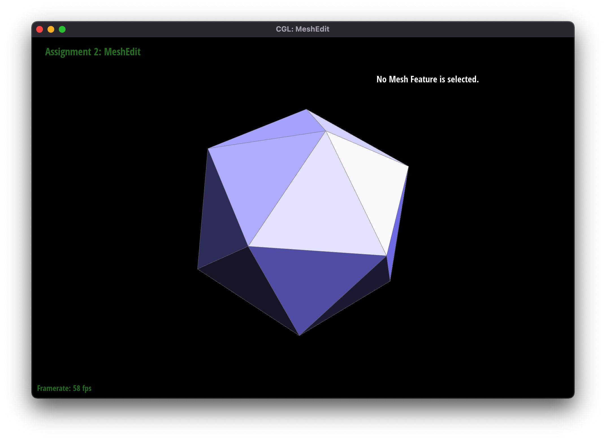 | 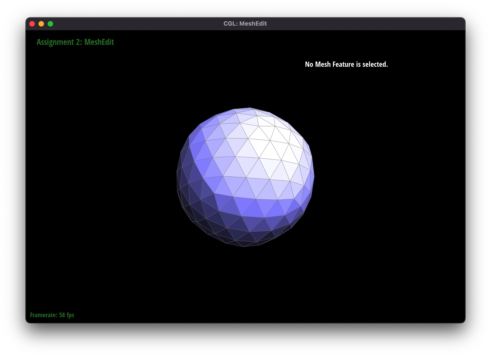 | 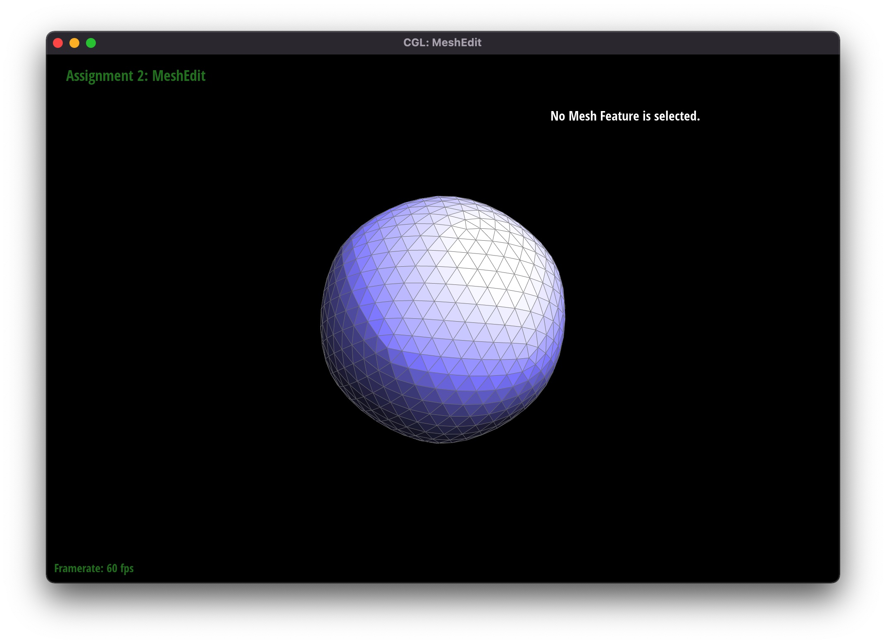 |
The more I upsample the meshes, the denser the meshes become, and the less sharper the corners and edges become. As shown in the screenshots, after 4 upsample commands, the object almost turns into a sphere.
To reduce this effect, I repeated split the edges (3 turns) around vertices (I did it for 2 of it, but one could definitely do for all vertices for this object), and observe that upsampling the mesh didn't smooth out these two vertices to create a sphere, and I instead create a lemon with two pointy ends.
| 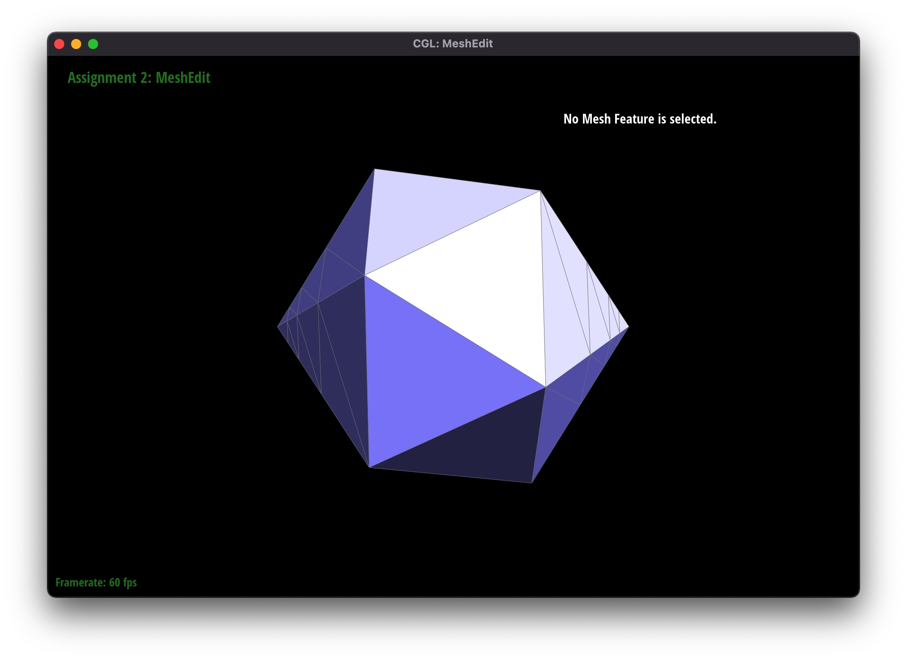 | 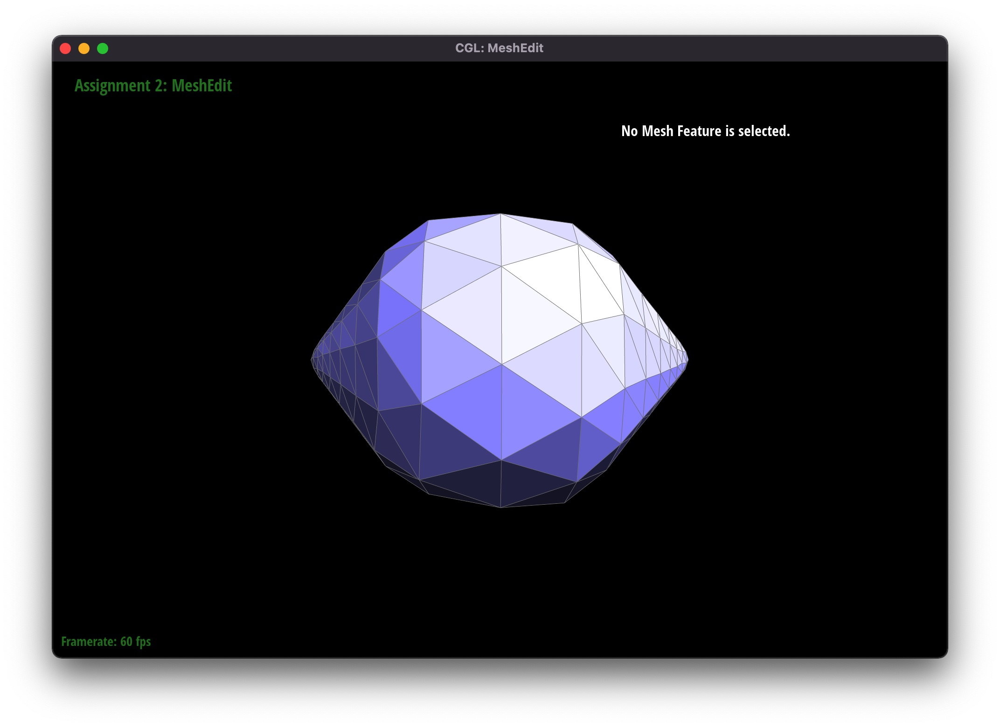 |
After some upsampling, the cube mesh becomes asymmetric. There's pointy places everywhere on the mesh.
The reason is that the triangle meshes for the cube is uneven at first. As shown in the screenshots below, for the vertex on the left screenshot, its new position will depend on these 4 circled vertices (and itself). Clearly, there will be some bias for the resulting new position because of the vertex pointed by the diagonal edge (because we're summing the vectors for these 4 vertices when calculating the new position). For the vertex on the right screenshot, there's a more even layout for the neighboring vertices. Therefore, this results in the asymmetric mesh observed above (because the vertices are not updated in the same way).
|
|
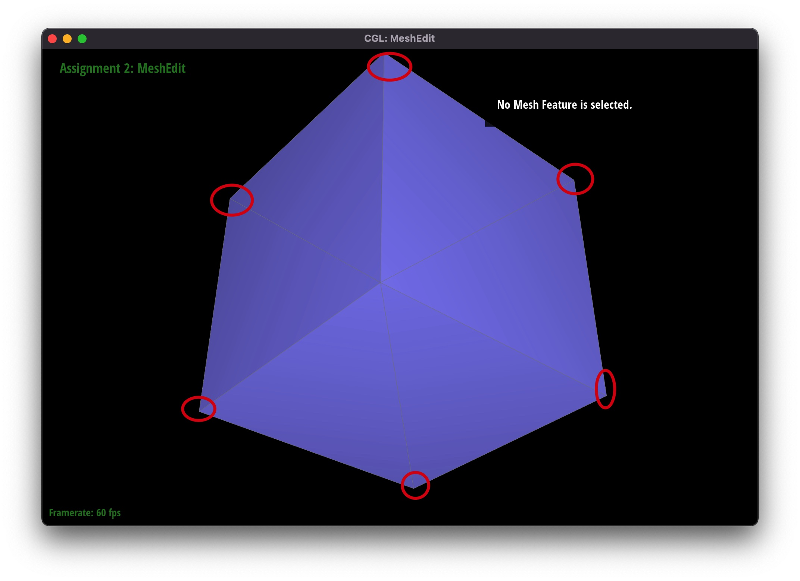
|
If I split all diagonal edges, as shown in the left screenshot below, the upsampled mesh will be more symmetric (as shown in the right screenshot below) because now, every vertices depend on these 6 vertices around it, which means their new positions will be calculated in the same way.
| 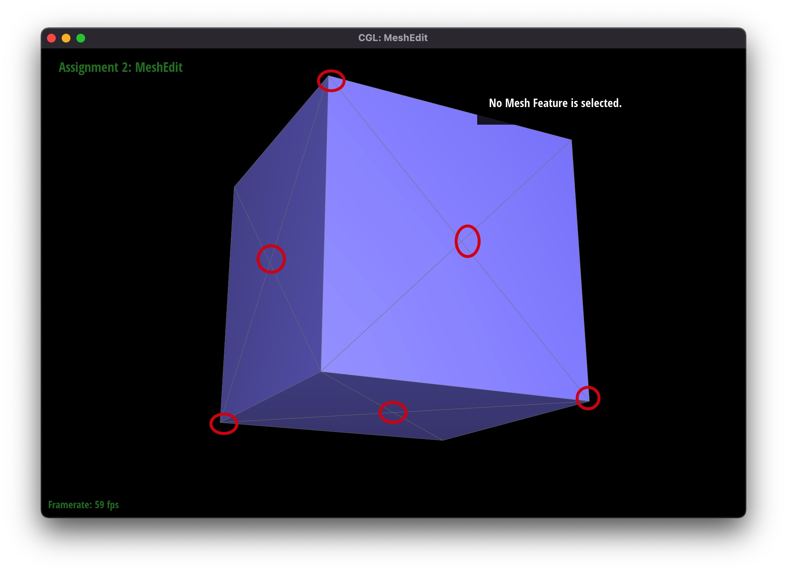 | 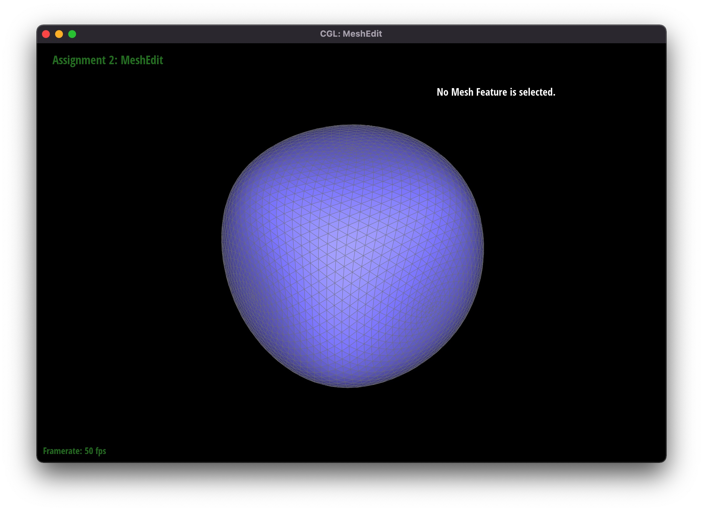 |
If you are not participating in the optional mesh competition, don't worry about this section!
I'm lazy :)